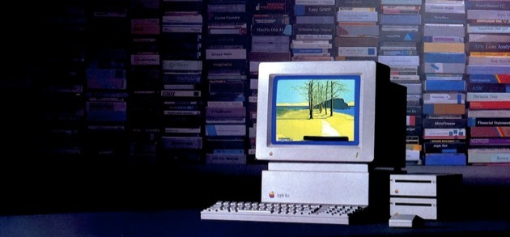

Welcome to the Apple IIGS

This site contains demos from Virtual GS web site
and some demos, games and media files that you can enjoy online
For more Apple II software, please visit Virtual Apple
Required a PC with ActiveGS Internet Explorer or Firefox plugin from FTA